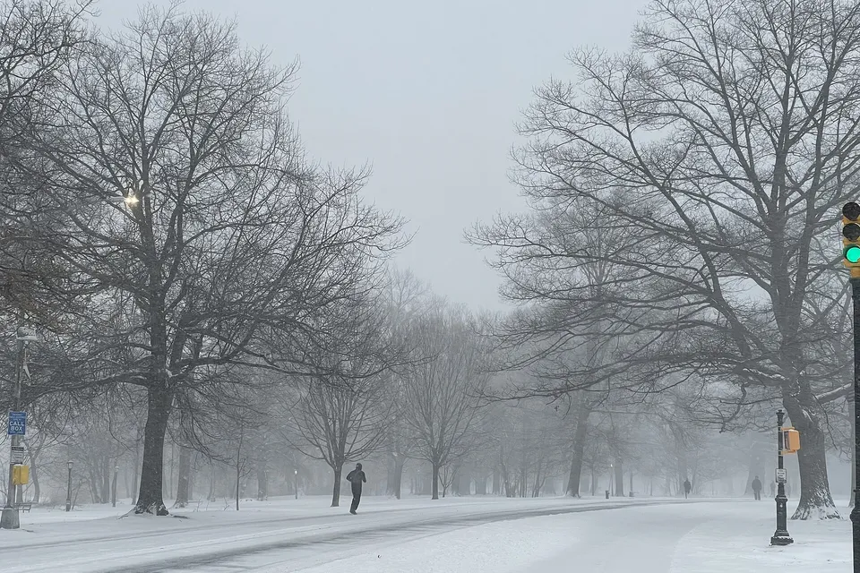

Dressed for the cold: winter kit for running and riding
Snow in Prospect Park, Brooklyn, January 2026. Photo: Wil540 art, Wikimedia Commons, CC BY 4.0
Cold weather isn't a reason to stay indoors – the wrong kit is. Dress well and you can run and ride right through January with warm fingers and a smile on your face. Here's what matters, from layering to hats and gloves to lights and reflective gear.
The layering system
The golden rule for winter is layering: several thin layers instead of one thick jacket. Warm air is trapped between them, and you can leave one off or take it off along the way, depending on the weather. Each layer has its own job:
| Layer | Job and material |
|---|---|
| 1. Base layer | Sits right against your skin and wicks sweat away. Technical fabrics or merino wool work well. Leave cotton in the drawer: it soaks up sweat and stays wet. |
| 2. Mid layer | Keeps the warmth close to your body – a thin fleece or a merino long-sleeve, for example. On milder days, you can skip it. |
| 3. Outer layer | A light, breathable jacket against wind and rain. Waterproof when it's wet; on dry, cold days a windproof jacket is enough. |
How many layers you need depends on temperature, wind and pace. A simple rule of thumb: you should feel a little chilly when you set off. Ten minutes in, you'll be warm. If you're sweating at the start, you're wearing too much. More tips for training in the cold are in “Cold, dark and still running”.
Head, hands and feet
These are the first places to get cold – and where a little kit makes the biggest difference:
- Head: a headband is enough on milder days, a thin running beanie when it's freezing. On the bike, a thin cap fits under your helmet.
- Neck: a neck gaiter keeps your neck warm and pulls up over your mouth and nose on really cold days.
- Hands: thin running gloves are usually all you need. If your hands get cold easily, try mittens – your fingers keep each other warm.
- Feet: slightly thicker socks in technical fabric or merino. Just make sure your shoes don't get too tight, or your feet will get colder, not warmer.
It's colder on the bike
On the bike, the wind you create chills you far more than running does, and on descents you're barely working but cooling down fast. That's why you dress warmer for a ride than for a run at the same temperature:
- Windproof front: a jacket or gilet that blocks the wind at the front and breathes at the back.
- Full-length legs: thermal bib tights or leg warmers.
- Hands and feet: thicker gloves than for running, plus overshoes against wind and spray – your feet hardly move on the bike and get cold quickly.
- A spare layer: on a long ride with a café stop, a packable jacket in your jersey pocket is worth its weight.
When it's just too grim outside, training carries on indoors. How to combine turbo, pool and running is covered in “Swim, spin, run”.
Rain and snow
Wet and cold is the worst combination. A waterproof jacket keeps the rain out, and a cap with a peak keeps it off your face. In snow and slush, trail shoes with a chunky tread help, and for dry feet there are waterproof shoes and socks.
The most important thing after a wet run or ride: get out of your wet clothes as quickly as you can. If you'll be standing around afterwards or driving home, pack something dry.
See and be seen
In winter, a lot of your training happens in the dark. Make sure others spot you early:
- Bright colours and reflective details on your jacket, tights or shoes. Reflectors on your ankles and hands stand out most, because they move.
- A head torch when you run, so you can see kerbs and roots.
- Good bike lights front and rear, plus a light on your helmet or backpack as a backup.
You don't need to buy everything new
To get started, most of what you need is probably already in your wardrobe: a technical top, a thin fleece, a windproof jacket, a hat and gloves. Once you know where you get cold, you can add what's missing – usually it's hands and feet.
The bottom line
Layer up, keep your hands and feet warm and light yourself up, and training in the frost becomes something to enjoy. Dress so you feel a little cool at the start – and find a group for the winter. Running and riding together makes the cold months much easier.
Get through winter together
Running groups and rides that keep going all winter – and races for your next goal.
All tips in this article are based on experience.